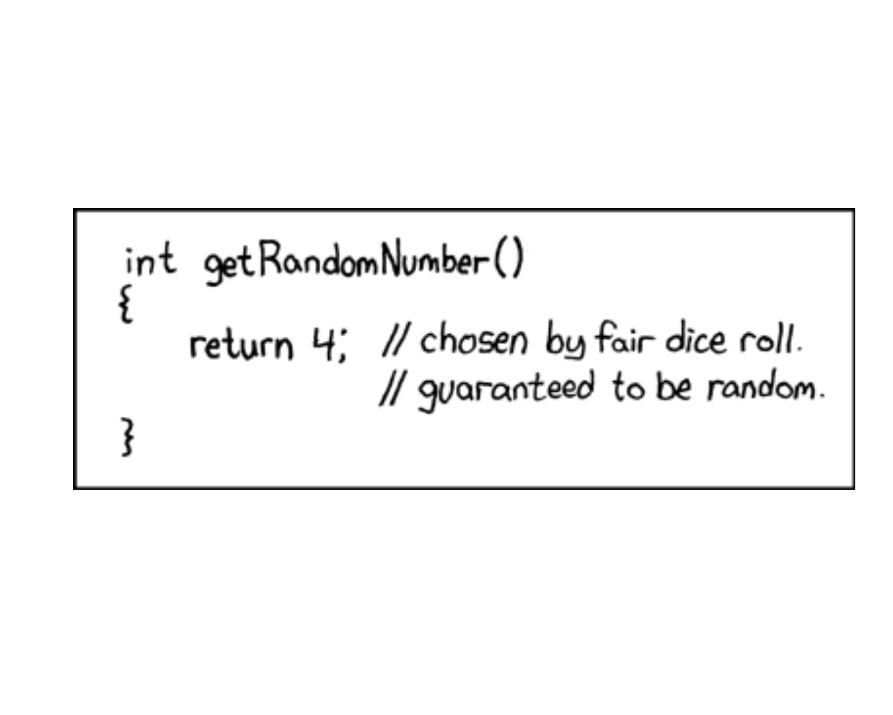
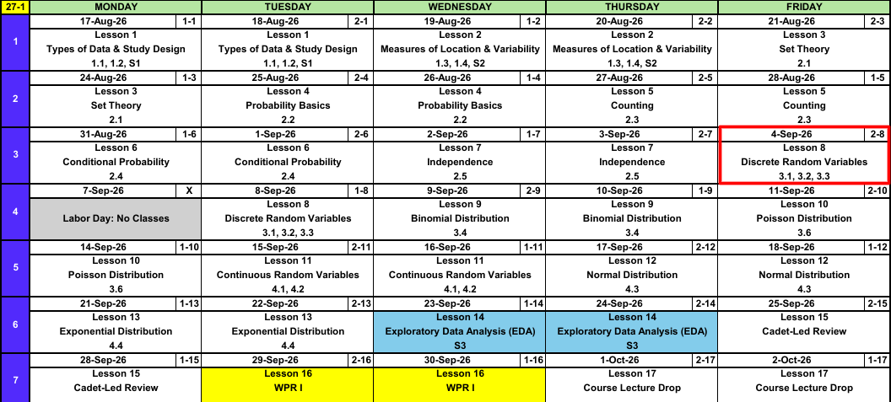
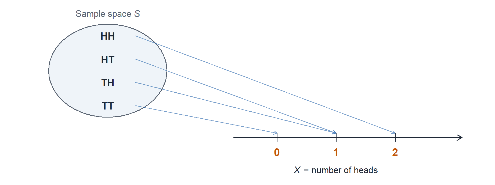
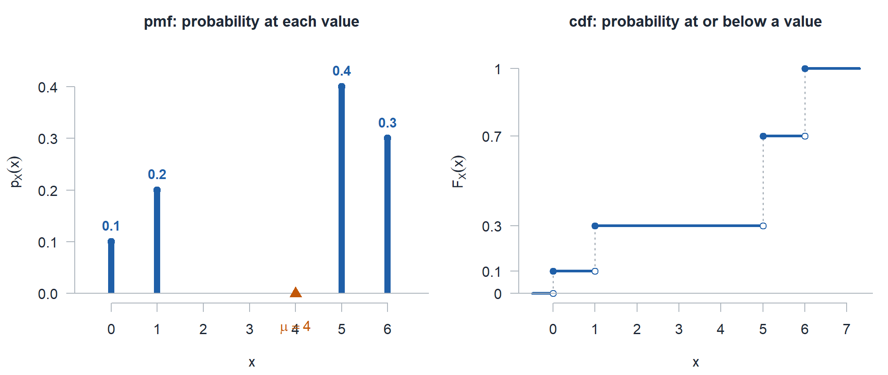

Lesson 8: Discrete Random Variables
Calendar

What We Did: Lessons 1 through 7
NoteReview: Data, Study Design, and Summaries (Lessons 1 and 2)
- Population vs sample, parameter (\(\mu\), \(\sigma\), \(p\)) vs statistic (\(\bar{x}\), \(s\), \(\hat{p}\)).
- Random sampling buys generalization, random assignment buys causation.
- Center: mean, median, trimmed mean. Spread: \(s^2\), \(s\), and the fourth spread \(f_s\).
NoteReview: Set Theory and Probability Basics (Lessons 3 and 4)
- Experiment, sample space \(\mathcal{S}\), event as a subset of \(\mathcal{S}\).
- Union is “or”, intersection is “and”, complement is “not”.
- Three axioms, the complement rule \(P(A') = 1 - P(A)\), and the addition rule \(P(A \cup B) = P(A) + P(B) - P(A \cap B)\).
- Equally likely outcomes: \(P(A) = N(A)/N\).
NoteReview: Counting (Lesson 5)
- Product rule: \(n_1 n_2 \cdots n_k\).
- Permutation (order matters): \(P_{k,n} = \dfrac{n!}{(n-k)!}\).
- Combination (order does not): \(\dbinom{n}{k} = \dfrac{n!}{k!\,(n-k)!}\).
NoteReview: Conditional Probability (Lesson 6)
- Conditional probability: \(P(A \mid B) = \dfrac{P(A \cap B)}{P(B)}\).
- Multiplication rule: \(P(A \cap B) = P(A \mid B)\,P(B)\).
- Law of Total Probability: \(P(B) = \sum_{i=1}^{k} P(B \mid A_i)\,P(A_i)\).
- Bayes’ Theorem flips the conditioning, and \(P(A \mid B) \ne P(B \mid A)\).
NoteReview: Independence (Lesson 7)
- Independent: \(P(A \mid B) = P(A)\), tested with \(P(A \cap B) = P(A)\,P(B)\).
- Independence collapses the conditional, multiplication, and addition rules.
- Mutually exclusive is not independent. Disjoint events are as dependent as events get.
- \(P(\text{at least one}) = 1 - P(\text{none})\), and “none” is a product under independence.
Everything so far has been about events. Today we start attaching numbers to outcomes.
What We’re Doing: Lesson 8
Objectives
- Define a random variable and construct the probability mass function (pmf) and cumulative distribution function (cdf) of a discrete RV. (SLO 7)
- Compute the expected value \(E(X)\) and variance \(V(X)\) of a discrete random variable. (SLO 7)
- Apply the rules of expected value and variance, including \(E[h(X)]\), \(E(aX+b)\), and \(V(aX+b)\). (SLO 7)
Required Reading
Devore 3.1, 3.2, 3.3
Break!
The Takeaway for Today
NoteKey Concepts from Lesson 8
- A random variable \(X\) assigns a number to every outcome in \(\mathcal{S}\)
- pmf: \(p_X(x) = P(X = x)\), with \(p_X(x) \ge 0\) and \(\sum_x p_X(x) = 1\)
- cdf: \(F_X(x) = P(X \le x) = \sum_{y \le x} p_X(y)\), a step function that jumps by \(p_X(x)\)
- Expected value: \(E(X) = \mu = \sum_x x\,p_X(x)\), the balance point of the pmf
- Variance: \(V(X) = \sigma^2 = \sum_x (x - \mu)^2 p_X(x) = E(X^2) - [E(X)]^2\)
- Read event probabilities off the pmf by adding mass, or off the cdf by differencing \(F\)
Random Variables
ImportantDefinition: Random Variable
A random variable is a rule that assigns a number to every outcome in the sample space. It is discrete if its possible values can be listed, finite or countably infinite. It is continuous if its possible values fill an interval.
Roll two dice and the outcome is a pair like \((3,4)\). That is not a number, it is an outcome. The sum, \(7\), is a number. The random variable is the rule “add the two faces.”
Flip a coin twice and let \(X\) be the number of heads. The random variable is the arrow from each outcome to a number.

\(X\) collapses four outcomes onto three numbers. That is the whole point: probability that lived on events now lives on numbers, and \(P(X = 1) = 1/2\) because two outcomes point at \(1\).
Discrete You can list the values Trucks deadlined, rounds hit, cadets present, calls to the CQ desk.
L8 unnamed
L9 Binomial
L10 Poisson
Continuous You cannot Run time, fuel remaining, wait until the next call, tensile strength.
L11 unnamed
L12 Normal
L13 Exponential
Today and the next five lessons ask the same two questions six times: what values can \(X\) take, and how much probability sits on each one.
WarningNotation Matters Here
- \(X\) (capital) is the random outcome of the process, before you look.
- \(x\) (lowercase) is a specific value you plug in.
- \(P\) takes an event. \(p\) takes a number.
\[p_X(x) = P(X = x)\]
Read it as: the probability that the random outcome \(X\) lands on the specific value \(x\).
The Probability Mass Function
ImportantDefinition: Probability Mass Function (pmf)
The pmf of a discrete random variable \(X\) is \[p_X(x) = P(X = x).\] It must satisfy two conditions: \[p_X(x) \ge 0 \quad \text{for all } x, \qquad \sum_{\text{all } x} p_X(x) = 1.\]
The pmf is a full accounting of the randomness. Nothing is left over, so the probabilities have to add to \(1\).
Example:
Nothing says the values have to be consecutive or equally likely. Let \(X\) take the values \(0, 1, 5, 6\).
\[p_X(x) = \begin{cases} 0.1 & \text{if } x = 0 \\ 0.2 & \text{if } x = 1 \\ 0.4 & \text{if } x = 5 \\ 0.3 & \text{if } x = 6 \\ 0 & \text{otherwise} \end{cases}\]
The same information as a table:
| \(x\) | 0 | 1 | 5 | 6 |
|---|---|---|---|---|
| \(p_X(x)\) | 0.1 | 0.2 | 0.4 | 0.3 |
Check the two conditions. Every value is nonnegative, and \(0.1 + 0.2 + 0.4 + 0.3 = 1\). It is a legal pmf.
Let’s answer some questions about our pmf.
NoteQuestions
\(P(X = 5)\) and \(P(X = 3)\)
\(P(X < 1)\) and \(P(X \le 1)\)
\(P(X > 5)\) and \(P(X \ge 5)\)
\(P(X < 4)\) and \(P(X \le 4)\)
\(P(1 \le X \le 5)\) and \(P(1 < X < 5)\)
TipAnswers
\(P(X = 5) = 0.4\). \(P(X = 3) = 0\), because \(3\) is not one of the values.
\(P(X < 1) = 0.1\), which is only \(x = 0\). \(P(X \le 1) = 0.1 + 0.2 = 0.3\), which also picks up \(x = 1\). When the endpoint is a value \(X\) can take, strict and inclusive give different answers.
\(P(X > 5) = 0.3\). \(P(X \ge 5) = 0.4 + 0.3 = 0.7\). By the complement rule, \(P(X > 5) = 1 - P(X \le 5) = 1 - 0.7 = 0.3\).
\(P(X < 4) = P(X \le 4) = 0.1 + 0.2 = 0.3\). At \(4\), a value \(X\) never takes, strict and inclusive agree.
\(P(1 \le X \le 5) = 0.2 + 0.4 = 0.6\). \(P(1 < X < 5) = 0\), since no value sits strictly between \(1\) and \(5\).
The Cumulative Distribution Function
ImportantDefinition: Cumulative Distribution Function (cdf)
The cdf of a discrete random variable \(X\) is \[F_X(x) = P(X \le x) = \sum_{y \,\le\, x} p_X(y).\] \(F\) accumulates. Any real number is a legal input, not just the values \(X\) can take.
Example: The Same \(X\)
Same \(X\), side by side. The pmf on the left is what we already have. The cdf on the right is built from it by running a total down the column.
pmf: probability at a value
\[p_X(x) = \begin{cases} 0.1 & \text{if } x = 0 \\ 0.2 & \text{if } x = 1 \\ 0.4 & \text{if } x = 5 \\ 0.3 & \text{if } x = 6 \\ 0 & \text{otherwise} \end{cases}\]
cdf: probability at or below a value
\[F_X(x) = \begin{cases} 0 & \text{if } x < 0 \\ 0.1 & \text{if } 0 \le x < 1 \\ 0.3 & \text{if } 1 \le x < 5 \\ 0.7 & \text{if } 5 \le x < 6 \\ 1 & \text{if } x \ge 6 \end{cases}\]
Every number on the right is a running total of the numbers on the left:
- \(F_X(0) = 0.1\)
- \(F_X(1) = 0.1 + 0.2 = 0.3\)
- \(F_X(5) = 0.3 + 0.4 = 0.7\)
- \(F_X(6) = 0.7 + 0.3 = 1\)
Stack the two as rows of one table and the accumulation reads left to right:
| \(x\) | 0 | 1 | 5 | 6 |
|---|---|---|---|---|
| \(p_X(x)\) | 0.1 | 0.2 | 0.4 | 0.3 |
| \(F_X(x)\) | 0.1 | 0.3 | 0.7 | 1.0 |
Two things to notice. The last entry of \(F\) has to be \(1\), since by then every outcome is accounted for. And each jump in \(F\) is exactly \(p_X(x)\), with \(F\) holding flat in between: it sits at \(0.3\) from \(1\) all the way to \(5\), so \(F_X(4.2) = 0.3\) even though \(X\) can never be \(4.2\).

Now the same five questions off the cdf.
NoteQuestions
\(F_X(4.2)\)
\(P(X \le 5)\) and \(P(X < 5)\)
\(P(X > 5)\) and \(P(X \ge 5)\)
\(P(X = 5)\), using \(F\) alone
\(P(1 < X \le 6)\)
TipAnswers
\(F_X(4.2) = 0.3\). \(F\) holds flat between values, so it returns the running total through the last value at or below \(4.2\), which is \(1\).
\(P(X \le 5) = F_X(5) = 0.7\), read straight off. \(P(X < 5) = F_X(1) = 0.3\): strict means step back to the previous value, not \(F_X(5)\).
\(P(X > 5) = 1 - F_X(5) = 1 - 0.7 = 0.3\). \(P(X \ge 5) = 1 - F_X(1) = 1 - 0.3 = 0.7\). The complement of \(\ge 5\) is \(< 5\), so subtract \(F\) at the previous value.
\(P(X = 5) = F_X(5) - F_X(1) = 0.7 - 0.3 = 0.4\), the size of the jump at \(5\).
\(P(1 < X \le 6) = F_X(6) - F_X(1) = 1 - 0.3 = 0.7\). Subtracting \(F_X(1)\) removes everything at or below \(1\), which is what the strict left end asks for.
Expected Value
ImportantDefinition: Expected Value
The expected value (or mean) of a discrete random variable \(X\) with pmf \(p_X(x)\) is \[E(X) = \mu_X = \sum_{\text{all } x} x \, p_X(x).\]
One term per value, weight times value. It is the mean of the population \(X\) describes, not the mean of a sample.
Same \(X\) we have been working with all lesson:
\[p_X(x) = \begin{cases} 0.1 & \text{if } x = 0 \\ 0.2 & \text{if } x = 1 \\ 0.4 & \text{if } x = 5 \\ 0.3 & \text{if } x = 6 \\ 0 & \text{otherwise} \end{cases}\]
\[E(X) = (0)(0.1) + (1)(0.2) + (5)(0.4) + (6)(0.3) = 0 + 0.2 + 2.0 + 1.8 = 4\]
That \(\mu = 4\) is the orange triangle in the pmf above. Put the four spikes on a seesaw and it balances at \(4\).
WarningAn Expected Value Is Not a Prediction
\(X\) is never \(4\). It can only be \(0\), \(1\), \(5\), or \(6\). Expected value is the balance point of the pmf, the long run average over many repetitions, and it does not have to be a value \(X\) can take.
Variance and Standard Deviation
ImportantDefinition: Variance and Standard Deviation
\[V(X) = \sigma_X^2 = \sum_{\text{all } x} (x - \mu)^2 \, p_X(x) = E[(X - \mu)^2]\]
The shortcut formula, which is usually less work: \[V(X) = E(X^2) - [E(X)]^2, \qquad \text{where } E(X^2) = \sum_x x^2 \, p_X(x).\]
The standard deviation is \(\sigma_X = \sqrt{V(X)}\), back in the units of \(X\).
Same idea as \(s^2\) from Lesson 2, except the weights are probabilities instead of \(1/(n-1)\).
Same \(X\) again, with \(\mu = 4\) from above:
\[p_X(x) = \begin{cases} 0.1 & \text{if } x = 0 \\ 0.2 & \text{if } x = 1 \\ 0.4 & \text{if } x = 5 \\ 0.3 & \text{if } x = 6 \\ 0 & \text{otherwise} \end{cases}\]
By the definition. Squared distance from \(\mu = 4\), weighted:
\[V(X) = (0-4)^2(0.1) + (1-4)^2(0.2) + (5-4)^2(0.4) + (6-4)^2(0.3)\]
\[V(X) = (16)(0.1) + (9)(0.2) + (1)(0.4) + (4)(0.3) = 1.6 + 1.8 + 0.4 + 1.2 = 5\]
By the shortcut. Same answer, fewer subtractions. First \(E(X^2)\), which squares the value and keeps the same weight:
\[E(X^2) = \sum_x x^2 \, p_X(x) = (0^2)(0.1) + (1^2)(0.2) + (5^2)(0.4) + (6^2)(0.3)\]
\[E(X^2) = (0)(0.1) + (1)(0.2) + (25)(0.4) + (36)(0.3) = 0 + 0.2 + 10 + 10.8 = 21\]
\[V(X) = 21 - 4^2 = 21 - 16 = 5\]
So \(\sigma_X = \sqrt{5} \approx 2.236\).
Start to Finish: A Scratch-Off Ticket
A gas station sells an \(\$8\) scratch-off ticket. Every ticket wins something. Let \(X\) be the dollars it pays out.
\[p_X(x) = \begin{cases} 0.50 & \text{if } x = 2 \\ 0.20 & \text{if } x = 5 \\ 0.20 & \text{if } x = 10 \\ 0.10 & \text{if } x = 20 \\ 0 & \text{otherwise} \end{cases}\]
| \(x\) | 2 | 5 | 10 | 20 |
|---|---|---|---|---|
| \(p_X(x)\) | 0.50 | 0.20 | 0.20 | 0.10 |
The values are not consecutive, and they do not start at \(0\) or \(1\). A random variable takes whatever values the problem hands it.
a) Is this a legal pmf?
TipAnswer
Every value is nonnegative, and \(0.50 + 0.20 + 0.20 + 0.10 = 1\). Both conditions hold.
b) Build the cdf.
TipAnswer
Run a total through the pmf: \(0.50\), then \(0.50 + 0.20 = 0.70\), then \(0.70 + 0.20 = 0.90\), then \(0.90 + 0.10 = 1\).
\[F_X(x) = \begin{cases} 0 & \text{if } x < 2 \\ 0.50 & \text{if } 2 \le x < 5 \\ 0.70 & \text{if } 5 \le x < 10 \\ 0.90 & \text{if } 10 \le x < 20 \\ 1 & \text{if } x \ge 20 \end{cases}\]
| \(x\) | 2 | 5 | 10 | 20 |
|---|---|---|---|---|
| \(p_X(x)\) | 0.50 | 0.20 | 0.20 | 0.10 |
| \(F_X(x)\) | 0.50 | 0.70 | 0.90 | 1.00 |
The gaps show up as long flats. \(F\) holds at \(0.70\) from \(5\) all the way to \(10\), and is still \(0\) up to \(2\), since \(2\) is the smallest payout.
c) Find \(E(X)\).
TipAnswer
\[E(X) = (2)(0.50) + (5)(0.20) + (10)(0.20) + (20)(0.10) = 1 + 1 + 2 + 2 = \mathbf{\$6.00}\]
The ticket costs \(\$8\) and pays back \(\$6\) on average, so the player is down two dollars a ticket in the long run. And \(\$6\) is not a payout the ticket can produce.
d) Find \(V(X)\) and \(\sigma_X\).
TipAnswer
Use the shortcut. First \(E(X^2)\), which squares the value and keeps the same weight:
\[E(X^2) = (2^2)(0.50) + (5^2)(0.20) + (10^2)(0.20) + (20^2)(0.10) = 2 + 5 + 20 + 40 = 67\]
\[V(X) = E(X^2) - [E(X)]^2 = 67 - 6^2 = \mathbf{31}, \qquad \sigma_X = \sqrt{31} \approx \mathbf{\$5.57}\]
The standard deviation is nearly as large as the mean. That \(\$20\) payout is uncommon, but it sits far enough out to drive most of the spread.
e) Find \(P(X = 10)\), \(P(X \le 5)\), \(P(X < 5)\), \(P(X \ge 10)\), \(P(5 \le X \le 10)\), \(P(X = 7)\), \(F_X(8)\), and \(F_X(1)\).
TipAnswers
- \(P(X = 10) = p_X(10) = \mathbf{0.20}\), straight off the pmf.
- \(P(X \le 5) = F_X(5) = \mathbf{0.70}\), straight off the cdf.
- \(P(X < 5) = F_X(2) = \mathbf{0.50}\). Strict inequality drops \(x = 5\), and \(2\) is the next value down.
- \(P(X \ge 10) = 1 - F_X(5) = \mathbf{0.30}\). Complement, cut below the smallest value in the event.
- \(P(5 \le X \le 10) = F_X(10) - F_X(2) = 0.90 - 0.50 = \mathbf{0.40}\). Subtract below the left endpoint, not at it, or you lose \(x = 5\). Check the pmf: \(0.20 + 0.20 = 0.40\).
- \(P(X = 7) = \mathbf{0}\). Seven sits inside the range of \(X\), but no mass sits on it.
- \(F_X(8) = \mathbf{0.70}\) and \(F_X(1) = \mathbf{0}\). Any real number is a legal input to \(F\).
For a discrete \(X\), \(\le\) and \(<\) are not interchangeable. Ask whether the endpoint is inside the event, and with gaps, cut at the next value that actually exists.
f) Given the ticket paid more than \(\$2\), what is the probability it paid at least \(\$10\)?
TipAnswer
Lesson 6 conditional probability, now on a random variable. With \(A = \{X \ge 10\}\) inside \(B = \{X > 2\}\), we get \(A \cap B = A\), so
\[P(X \ge 10 \mid X > 2) = \frac{P(X \ge 10)}{P(X > 2)} = \frac{0.30}{1 - F_X(2)} = \frac{0.30}{0.50} = \mathbf{0.60}\]
Only \(30\%\) of all tickets pay \(\$10\) or more, but among the tickets that beat the minimum payout, \(60\%\) do.
Board Problems
Problem 1: The Motor Pool
A company has \(4\) HMMWVs. Let \(X\) be the number deadlined for maintenance on a given morning, with
| \(x\) | 0 | 1 | 2 | 3 | 4 |
|---|---|---|---|---|---|
| \(p_X(x)\) | 0.30 | 0.35 | ? | 0.08 | 0.02 |
NoteQuestions
Find the missing probability.
Write the cdf \(F_X(x)\).
Find \(P(1 \le X \le 3)\) two ways: from the pmf and from the cdf.
Find \(E(X)\), \(V(X)\), and \(\sigma_X\).
TipAnswers
- The pmf has to sum to \(1\):
\[p_X(2) = 1 - (0.30 + 0.35 + 0.08 + 0.02) = 1 - 0.75 = \mathbf{0.25}\]
- Accumulate left to right:
\[F_X(x) = \begin{cases} 0 & \text{if } x < 0 \\ 0.30 & \text{if } 0 \le x < 1 \\ 0.65 & \text{if } 1 \le x < 2 \\ 0.90 & \text{if } 2 \le x < 3 \\ 0.98 & \text{if } 3 \le x < 4 \\ 1 & \text{if } x \ge 4 \end{cases}\]
- From the pmf:
\[P(1 \le X \le 3) = 0.35 + 0.25 + 0.08 = \mathbf{0.68}\]
From the cdf, subtract at \(a - 1 = 0\), not at \(1\):
\[F_X(3) - F_X(0) = 0.98 - 0.30 = \mathbf{0.68}\]
- Expected value:
\[E(X) = (0)(0.30) + (1)(0.35) + (2)(0.25) + (3)(0.08) + (4)(0.02) = 0.35 + 0.50 + 0.24 + 0.08 = \mathbf{1.17}\]
\[E(X^2) = (0)(0.30) + (1)(0.35) + (4)(0.25) + (9)(0.08) + (16)(0.02) = 0.35 + 1.00 + 0.72 + 0.32 = 2.39\]
\[V(X) = 2.39 - (1.17)^2 = 2.39 - 1.3689 = \mathbf{1.0211}, \qquad \sigma_X = \sqrt{1.0211} \approx \mathbf{1.010}\]
On an average morning about one truck is down, give or take one.
Problem 2: Reading the CQ Log
The CQ desk logs \(X\) calls in an hour. You are handed only the cdf:
\[F_X(x) = \begin{cases} 0 & \text{if } x < 0 \\ 0.15 & \text{if } 0 \le x < 1 \\ 0.55 & \text{if } 1 \le x < 2 \\ 0.85 & \text{if } 2 \le x < 3 \\ 1 & \text{if } x \ge 3 \end{cases}\]
NoteQuestions
Recover the pmf.
Find \(P(X \ge 2)\).
Find \(F_X(1.7)\) and explain what it means.
Find \(E(X)\) and \(\sigma_X\).
TipAnswers
- The pmf is the size of each jump:
| \(x\) | 0 | 1 | 2 | 3 |
|---|---|---|---|---|
| \(p_X(x)\) | 0.15 | 0.40 | 0.30 | 0.15 |
Check: \(0.15 + 0.40 + 0.30 + 0.15 = 1\).
- Complement of \(X \le 1\):
\[P(X \ge 2) = 1 - F_X(1) = 1 - 0.55 = \mathbf{0.45}\]
\(F_X(1.7) = \mathbf{0.55}\). The cdf holds flat between jumps, so no probability was added between \(1\) and \(1.7\). It is still just \(P(X \le 1)\), since \(X\) cannot land on \(1.7\).
Expected value:
\[E(X) = (0)(0.15) + (1)(0.40) + (2)(0.30) + (3)(0.15) = 0.40 + 0.60 + 0.45 = \mathbf{1.45}\]
\[E(X^2) = (0)(0.15) + (1)(0.40) + (4)(0.30) + (9)(0.15) = 0.40 + 1.20 + 1.35 = 2.95\]
\[V(X) = 2.95 - (1.45)^2 = 2.95 - 2.1025 = 0.8475, \qquad \sigma_X \approx \mathbf{0.921}\]
Problem 3: Two Convoy Routes
A convoy can take one of two routes. Let \(X\) be the delay in hours on the northern route and \(Y\) the delay on the southern route.
| \(x\) | 0 | 1 | 4 |
|---|---|---|---|
| \(p_X(x)\) | 0.6 | 0.3 | 0.1 |
| \(y\) | 0 | 1 | 2 |
|---|---|---|---|
| \(p_Y(y)\) | 0.4 | 0.5 | 0.1 |
NoteQuestions
Which route has the smaller expected delay?
Which route is more consistent? Compute \(\sigma\) for each.
A missed link up costs \(\$200\) per hour squared, so the penalty on the northern route is \(200X^2\). Find the expected penalty, then compare it to \(200\) times the square of the expected delay.
The commander wants to arrive on time, not on average. Which route, and why?
TipAnswers
- \[E(X) = (0)(0.6) + (1)(0.3) + (4)(0.1) = 0.3 + 0.4 = \mathbf{0.7 \text{ hours}}\]
\[E(Y) = (0)(0.4) + (1)(0.5) + (2)(0.1) = 0.5 + 0.2 = \mathbf{0.7 \text{ hours}}\]
They tie.
- \[E(X^2) = (0)(0.6) + (1)(0.3) + (16)(0.1) = 1.9, \qquad V(X) = 1.9 - 0.49 = 1.41, \qquad \sigma_X \approx \mathbf{1.187}\]
\[E(Y^2) = (0)(0.4) + (1)(0.5) + (4)(0.1) = 0.9, \qquad V(Y) = 0.9 - 0.49 = 0.41, \qquad \sigma_Y \approx \mathbf{0.640}\]
The southern route is far more consistent. Same average, about half the standard deviation.
- The expected penalty weights each squared delay by its probability, which is \(E(X^2)\) scaled by \(200\), and part (b) already found \(E(X^2) = 1.9\):
\[200\,E(X^2) = 200(1.9) = \mathbf{\$380}\]
Squaring the average instead gives
\[200[E(X)]^2 = 200(0.49) = \$98\]
Plugging in the mean understates the penalty by almost a factor of four. The gap is \(200\,V(X) = 200(1.41) = \$282\), and it is entirely the fault of that rare \(4\) hour delay.
- The southern route. The expected delays are identical, but the northern route carries a \(10\%\) chance of a \(4\) hour delay, and any cost that grows faster than linearly punishes that tail hard. When the penalty is nonlinear, comparing expected delays is not enough.
Problem 4: Building a pmf from Scratch
Three cadets attempt the obstacle course independently. Each passes with probability \(0.8\). Let \(X\) be the number who pass.
NoteQuestions
Construct the pmf of \(X\).
Find \(E(X)\) and \(V(X)\).
Notice anything about \(E(X)\) compared to \(3\) and \(0.8\)? What about \(V(X)\)?
TipAnswers
- Independence gives the probability of one sequence, counting gives how many sequences have \(k\) passes, exactly the Lesson 7 move:
\[p_X(k) = \binom{3}{k} (0.8)^k (0.2)^{3-k}\]
- \(p_X(0) = \binom{3}{0}(0.8)^0(0.2)^3 = 1(1)(0.008) = 0.008\)
- \(p_X(1) = \binom{3}{1}(0.8)^1(0.2)^2 = 3(0.8)(0.04) = 0.096\)
- \(p_X(2) = \binom{3}{2}(0.8)^2(0.2)^1 = 3(0.64)(0.2) = 0.384\)
- \(p_X(3) = \binom{3}{3}(0.8)^3(0.2)^0 = 1(0.512)(1) = 0.512\)
| \(x\) | 0 | 1 | 2 | 3 |
|---|---|---|---|---|
| \(p_X(x)\) | 0.008 | 0.096 | 0.384 | 0.512 |
They sum to \(1\).
- \[E(X) = (0)(0.008) + (1)(0.096) + (2)(0.384) + (3)(0.512) = 0.096 + 0.768 + 1.536 = \mathbf{2.4}\]
\[E(X^2) = (0)(0.008) + (1)(0.096) + (4)(0.384) + (9)(0.512) = 0.096 + 1.536 + 4.608 = 6.24\]
\[V(X) = 6.24 - (2.4)^2 = 6.24 - 5.76 = \mathbf{0.48}\]
- \(E(X) = 2.4 = 3(0.8) = np\), and \(V(X) = 0.48 = 3(0.8)(0.2) = np(1-p)\). You just derived the mean and variance of a binomial random variable by brute force. Lesson 9 gives it a name so you never have to build the table again.
Problem 5: Stretch
Let \(X\) have \(E(X) = 10\) and \(V(X) = 4\).
NoteQuestions
Find \(\sigma_X\).
Find \(E(X^2)\).
Can you find \(V(X^2)\) from what you are given? Explain.
TipAnswers
\[\sigma_X = \sqrt{V(X)} = \sqrt{4} = \mathbf{2}\]
Rearrange the shortcut formula:
\[V(X) = E(X^2) - [E(X)]^2 \;\Longrightarrow\; E(X^2) = V(X) + [E(X)]^2 = 4 + 100 = \mathbf{104}\]
Note this is nowhere near \([E(X)]^2 = 100\), and the gap is exactly \(V(X) = 4\).
- No. \(V(X^2) = E(X^4) - [E(X^2)]^2\), and nothing you were given pins down \(E(X^4)\). Two random variables can share a mean and a variance and still differ higher up. Any nonlinear function of \(X\) needs the whole pmf, not two summaries of it.
Before You Leave
Today
- A random variable turns outcomes into numbers, and the pmf says where the probability sits
- The cdf accumulates the pmf into a step function, and its jumps hand the pmf back
- \(E(X)\) is the balance point of the pmf, and it need not be a possible value
- \(V(X) = E(X^2) - [E(X)]^2\) is almost always the faster route
- Every event probability comes off the pmf by adding mass, or off the cdf by differencing \(F\)
Any questions?
Next Lesson
Lesson 9: Binomial Distribution
- Identify a binomial experiment and verify its conditions
- Compute binomial probabilities using the pmf and cdf (tables and software)
- State and interpret the mean and variance of a binomial random variable
Reading: Devore 3.4
Upcoming Graded Events
- WebAssign 3.1, 3.2, 3.3 - Due at the start of Lesson 9
- WPR I - Lesson 16 (covers Lessons 1-13)
- TEE - 15-18 Dec 2026